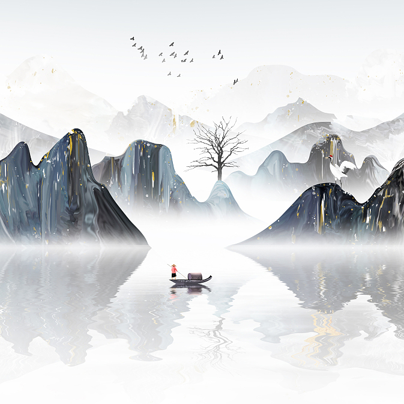

中国 是世界上河流最多的国家之一。中国有许多源远流长的大江大河。其中流域面积超过1000平方公里的河流就有2221条。中国的河流，按照河流径流的循环形式，有注入海洋的外河流，也有与海洋不相沟通的内河流。公认的中国十大河流分别是长江、黄河、黑龙江、松花江、珠江、雅鲁藏布江、澜沧江、怒江、汉江、辽河。
-
长江·发源地
长江
the Yangtze River
被誉为亚洲、中国第一长河,全长6,403公里；它发源于青藏高原唐古拉山主峰各拉丹东雪山，是世界第三长河，仅次于尼罗河与亚马逊河。水量也是世界第三。
主要特征
- 流经地区
- 11个省、自治区、直辖市
- 注入海洋
- 东海
-
黄河·九曲十八弯
黄河
the Yellow River
黄河是中国的母亲河，是中国的第二长河，世界第五长河，世界上含沙量最多的河流。黄河是中华文明的发源地，中国五千年文化有三千三百年位于黄河流域。
主要特征
- 流经地区
- 9个省、自治区
- 注入海洋
- 渤海
-
广州·大湾区
珠江
the Pearl River
以年径流量而言，它是中国第二大河 ；以长度而言，中国境内第三长内河，是中国南方最大河系。全长2320公里，是中国境内第三长河流 。
主要特征
- 流经地区
- 6个省
- 注入海洋
- 南海

-
 “江碧鸟逾白，山青花欲燃。”古代的文人雅客总借江水留墨，江水成为了大河文明的血管。
-
“当我死时，葬我，在长江与黄河之间枕我的头颅，白发盖着黑土。”余光中将思念写进江水，从海峡眺望到长江与黄河。
“川”即“江河”。“江河”无疑也是文学的母题。《诗经》中的“关关雎鸠，在河之洲”，老子的“上善若水”，庄子的“秋水”，都有江河的水光。《周易》充满了对是否“利涉大川”的判断，而《楚辞》几乎记载了屈原走过的每条河流，江河是屈原的足迹，也是他借以抒情言志的媒介。从文学的源头出发，江河文学也同时出发。
河流与文学的关系之所以紧密，无疑与人类必须依靠水而生存相关。水是人生存的前 提，也是乡村、城市以及社会、经济依赖的重要资源，写人的文学当然离不开人背后的 水。从文学与江河关系的紧密程度，文学中的江河可以从几个层面来审视。
第一类作品是直接书写水与人关系，或者以水为载体为要素的生活，或者因为江河而衍 生的职业行业生活。在这一类创作中，常见的有传统或日常的河流生活书写，如与捕 鱼、行船、渡口、码头、水运、装卸等等相关的题材。也有很大一部分作品以水利施 工、水利工程为背景而展开，在排涝、抗旱、治水、防洪、筑坝、修堤等等水利实践中 书写人的生活和命运。
第二类创作是河流文化层次的书写，祈水、镇水、歌谣、庙宇、造船等等。这一类文本 更多的是与第一个层次兼而有之，既有直接的江河生活，也有江河文化。
第三类是修辞和象征意义上的江河。一条河滋润一块土地，河流两岸人的命运都与河流 相连。但这类文本并不直接把江河作为书写元素，江河只是在文本中若隐若现，或左或 右，更多的是地理上的意义和符号。